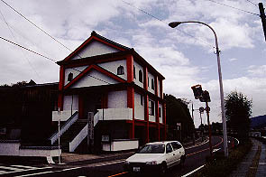
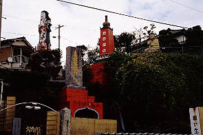
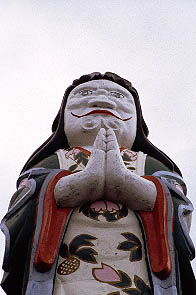
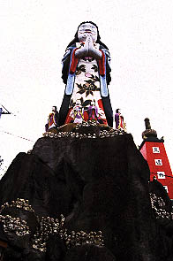
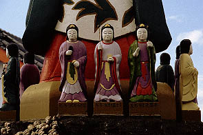
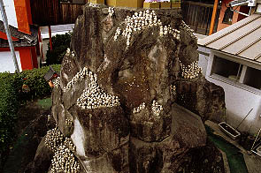
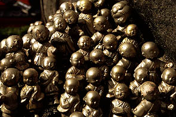
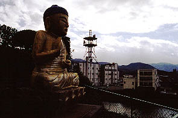
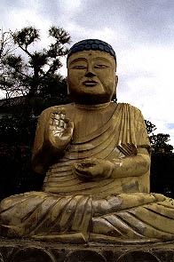

城山鬼子母神/大分県豊後高田市
大分の国東半島といえばいわゆる六郷満山仏教と呼ばれる仏教文化が栄えたお土地柄である。
その国東半島の付け根に位置する豊後高田市は真木大堂、富貴寺、熊野磨崖仏などなど九州を代表する文化遺産を有する日本文化の精神的支柱といっても過言ではないところ。あ、ちょっと過言でした。
・・・しかしそんなすんばらしい豊後高田市の寺を目の前にしてもやっぱり行くのはこんなトコ。

法華寺という日蓮宗のお寺である。寺の創設は明治30年頃らしい。
で、裏に回ると・・・

うおっっとお！
かなりキテます。
決して広くはないのだが地形をたくみに利用した見事な箱庭的パラダイスガーデン。
手前の赤い台座とその上の久遠の塔と書かれた赤い塔、金の座像、そして何といっても恐ろしく派手な立像が絶妙なバランスで激しく自己主張をしている。
 
皆さん、何だと思いますか？
鬼子母神だそうです。
鬼子母神といえば「恐れ入谷の鬼子母神」しか思い浮かばなく、よーく考えてみたら鬼子母神像というものを見た事がなかったので、今ちょっと調べてみたら決して間違いではないけれどかなり激しいオリジナリティを持った鬼子母神像といえそうだ。
アゴの辺りがかなりファンキー。ってゆーかその渦巻きは一体何？ついでに着物の柄もいいぞ。
像高は4〜5メートル位。ちなみに日本一の大鬼子母神像だそうで。そりゃそうだろう。
 
鬼子母神の足元にはお姉さん方が。そしてその下の岩の台座にキラキラ光っているのは・・・

金の小坊主の大パレード。
皆、鬼子母神さんに救いを求めています。多分。
 
鬼子母神ばかりが目立つこの寺だが、奥にいる座像の仏さんもなかなか侮れない。
いかにもセルフメイド系の仏像で実にイイ顔してます。
それにしてもこういうやんちゃな寺って普通、人目につかないロケーションにあるのだが、ここは街の中心部で川沿いにあるのでイヤでも目に付く。目を背けても目に付く。いや、もしかしたら目を閉じていても目に付く位のインパクトがある。
何かこう、珍寺魂剥き出しって感じで見ているこちらが気恥ずかしい感じがしました。
2002.11.
珍寺大道場 HOME